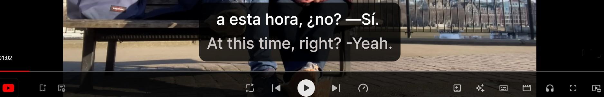

Uzun süredir İspanyolcayı akıcı bir şekilde konuşmak istiyorum. Eğlenceli uygulamalar oynayarak uzun bir yol katettim aslında, şu an A2 düzeyinde bir seviyeye sahibim. Fakat bu akıcı konuşmam için yeterli değil. Okul yıllarımda çevremdekilerden bazıları ya da benim tabirimle İngilizceyi hızlı ve akıcı konuşanlar sadece dizi ve filmler izleyerek öğrenmişti. O zaman ben neden bu yolu denemeyeyim diyerek keyifli bir şekilde İspanyolcayı akıcı konuşmaya başlıyorum. GÜN 1. Netflix´te popüler bir dizi olan Cassandra´yı İspanyolca dubjlaj ve İspanyolca-İngilizce olmak üzere iki dilli altyazı ile bitirdim. Teknolojiye meraklı biri olduğum için oldukça beğendiğimi söyleyebilirim. Bu süreçte sık kullanıldığını düşündüğüm 6 kalıbı not aldım. Her gün 5-10 arası yeni kalıp öğrenmeyi hedefledim. İlk günün kalıpları bunlar:  1. ¿A qué te refieres? What do you mean? 2. ya he vuelto! I'm back! 3. Te escucho. I'm all ears. 4. Me temo que I am afraid that Unfortunately 5. Te echo de menos. I miss you. 6. Te quiero mucho. I love you. Son olarak bunları Quizlet flashcard uygulamasında tekrar ettim.
Power BI öğrenmeye nasıl başladım? Günlük deneyimlerimi ve öğrendiklerimi burada paylaşıyorum.